Windows Server deployment, networking, IIS configuration, monitoring, and cost management using Microsoft Azure.
This project demonstrates the deployment and administration of a Windows Server 2022 virtual machine in Microsoft Azure. The environment includes virtual networking, security groups, public connectivity, IIS web server configuration, monitoring, and cost governance to provide hands-on experience with core Azure administration concepts.
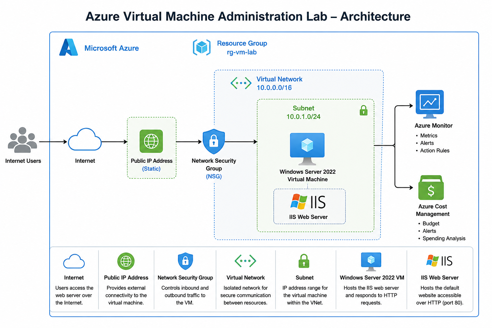
The environment consists of a Windows Server 2022 virtual machine deployed within an Azure Virtual Network and protected by Network Security Groups. Public connectivity was provided through a Public IP address and HTTP access was enabled to host the IIS default website. Monitoring and cost governance were implemented using Azure Monitor and Azure Cost Management.
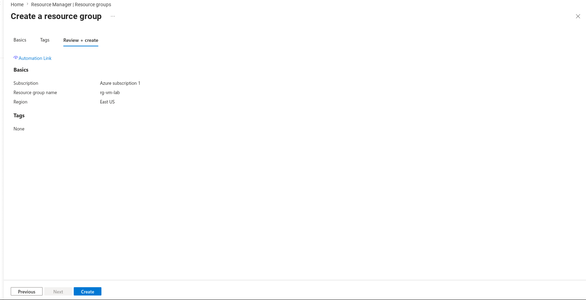
Created a dedicated resource group named rg-vm-lab to logically organize and manage all resources associated with the project.
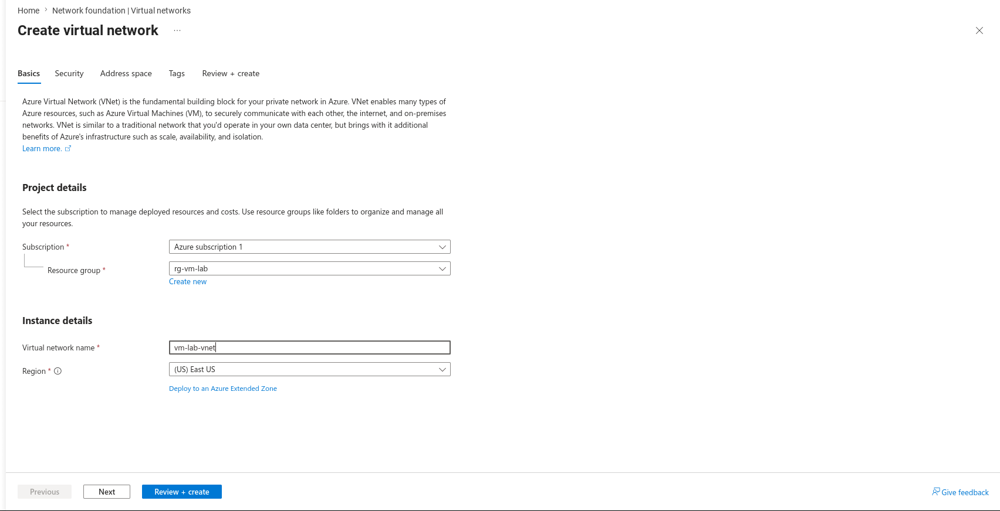
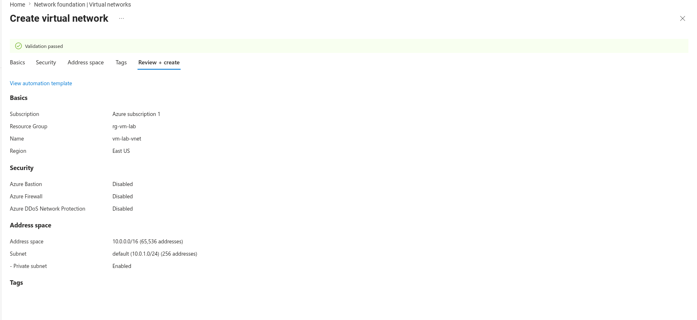
Configured a virtual network to provide private connectivity between Azure resources and establish the network foundation for the virtual machine environment.
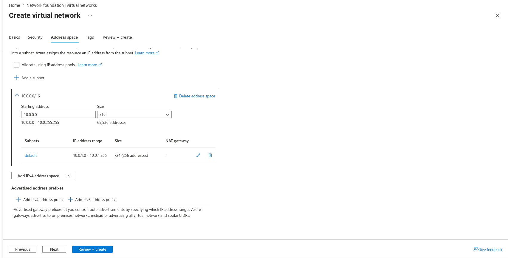
Created a subnet to provide IP addressing and separation for the Windows Server virtual machine.
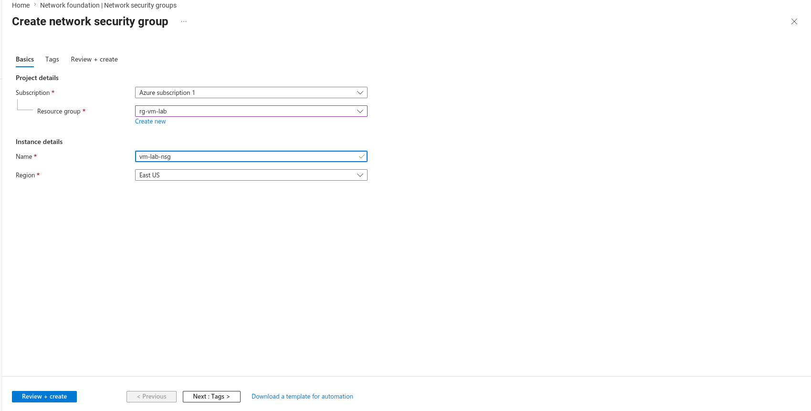
Implemented network security controls using an Azure Network Security Group to manage inbound and outbound traffic.
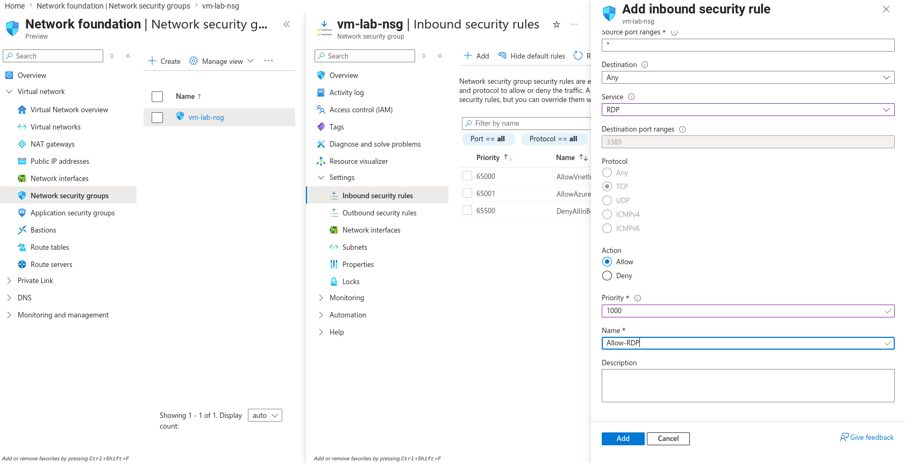
Created an inbound rule allowing Remote Desktop Protocol traffic on TCP port 3389 to enable secure administrative access to the server.
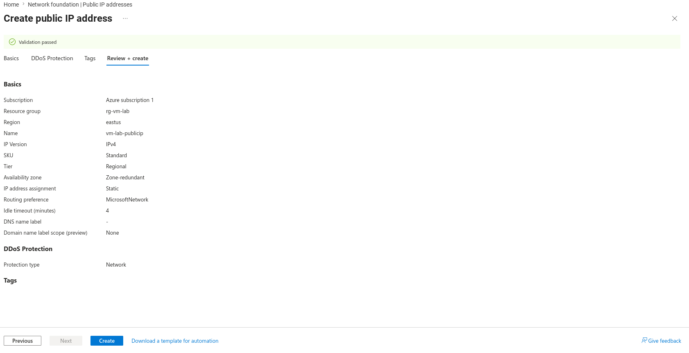
Configured a public IP address to provide external connectivity to the virtual machine and enable access from outside the Azure environment.
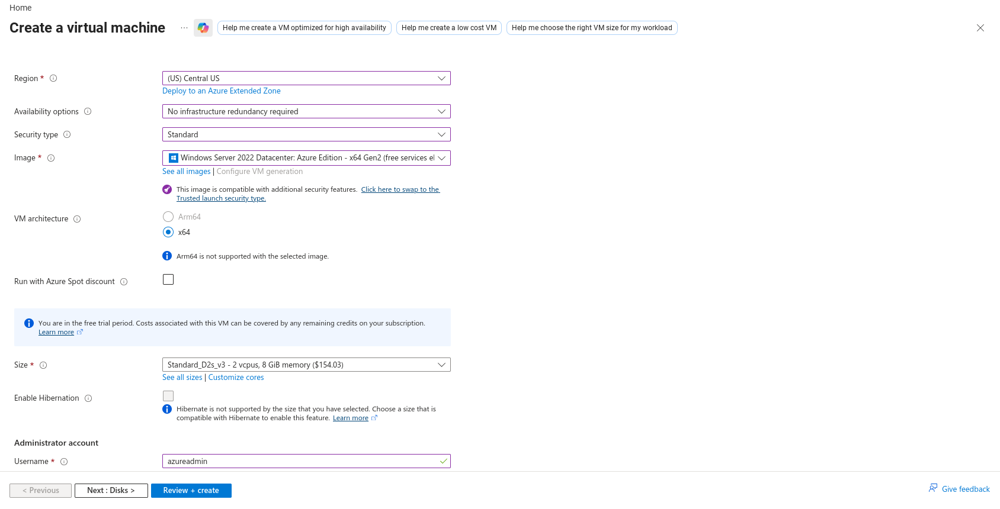
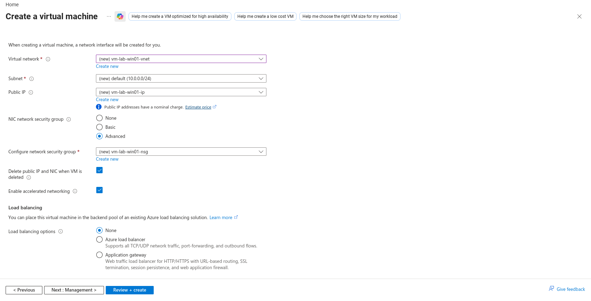
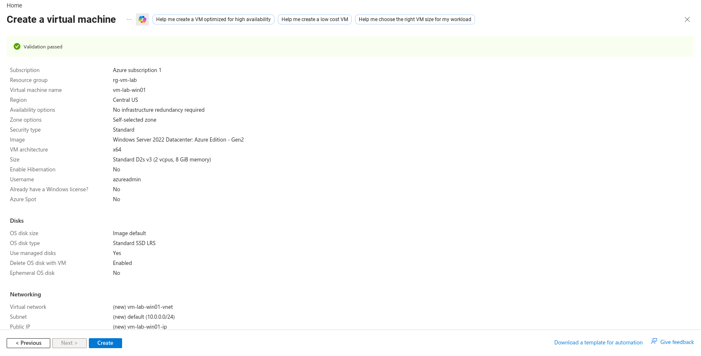
Provisioned a Windows Server 2022 virtual machine and associated networking resources to create the foundation of the lab environment.
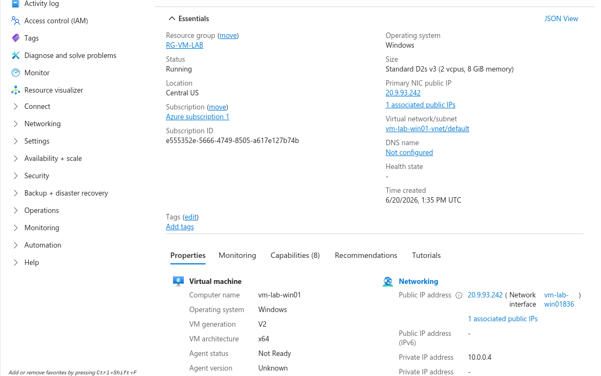
Verified successful deployment and confirmed that the virtual machine was operational and ready for administration.
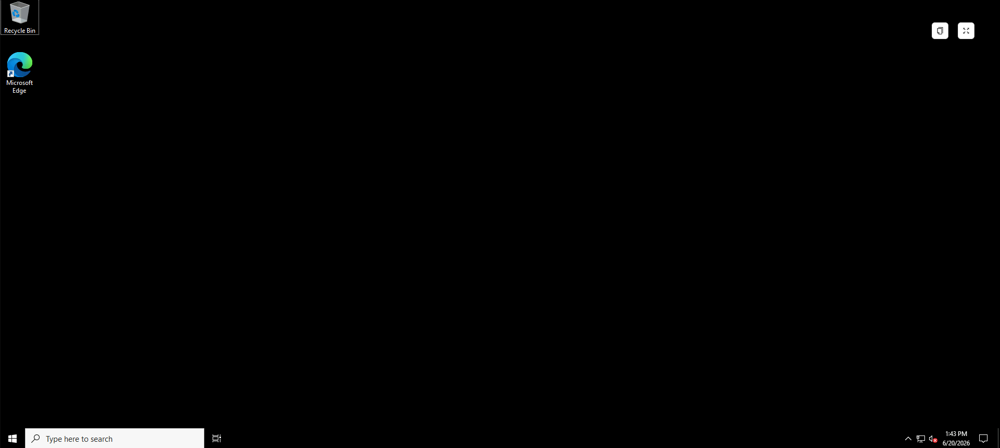
Established administrative access to the Windows Server 2022 virtual machine using Remote Desktop Protocol.
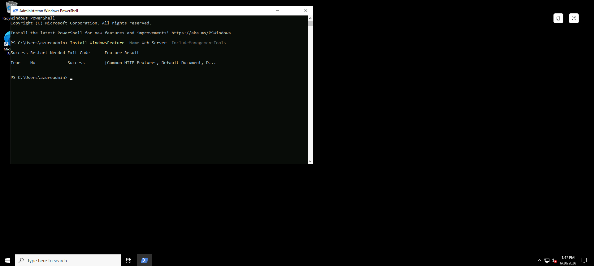
Installed Internet Information Services (IIS) to provide web server capabilities and host a test website within the virtual machine.
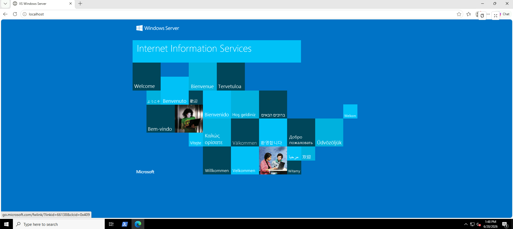
Confirmed that IIS was functioning correctly within the virtual machine before enabling public access. This verification ensured the web server was operating properly prior to modifying network security rules.
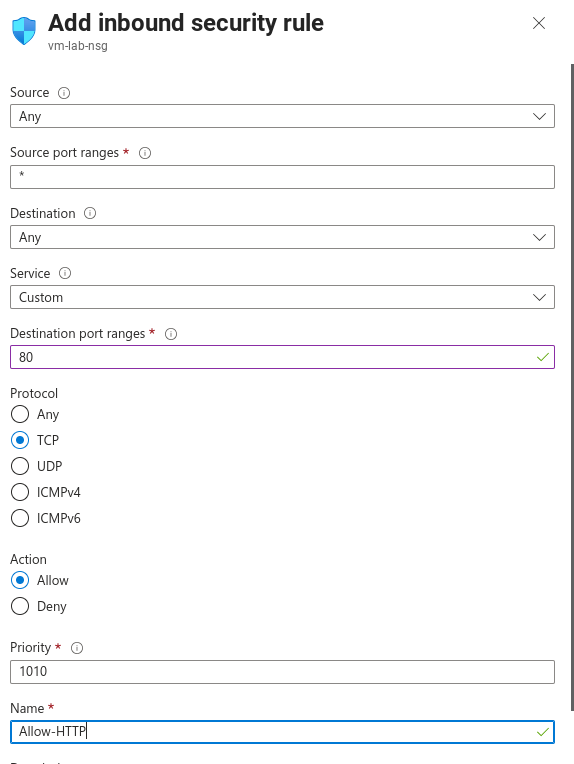
Created an inbound rule allowing HTTP traffic on TCP port 80. During testing, an additional Network Security Group automatically created by Azure was identified and configured appropriately, allowing successful external access to the IIS web server.
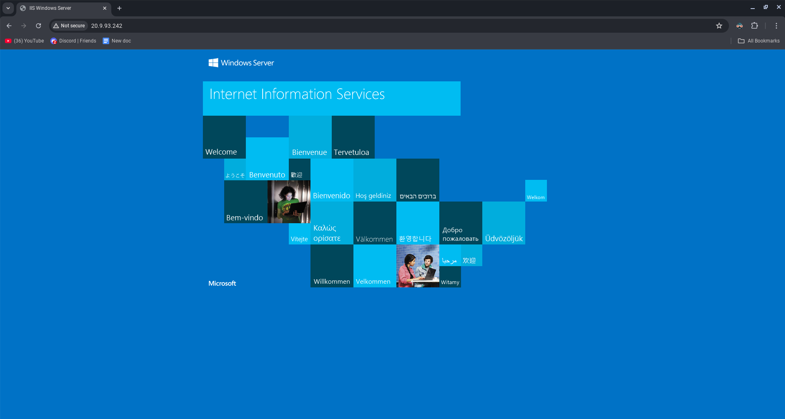
Confirmed successful external connectivity by accessing the IIS default page using the virtual machine's public IP address. This validated both IIS configuration and network connectivity.
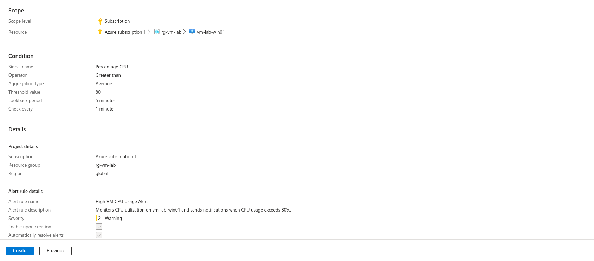
Configured monitoring and alerting to improve operational awareness and resource visibility. Alert rules were created to notify administrators when defined thresholds are exceeded.
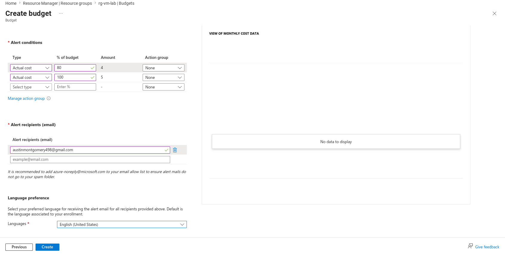
Implemented a monthly budget and spending alerts to demonstrate cost governance and help prevent unexpected cloud expenses. Budget notifications provide visibility into resource consumption and spending trends.
This project reinforced the importance of networking, security controls, monitoring, and cost governance when administering cloud infrastructure. It also provided practical experience with Windows Server administration, IIS configuration, and troubleshooting Azure networking issues.
During testing, an additional Network Security Group created automatically by Azure was discovered and configured appropriately. This experience highlighted the importance of understanding how Azure resources interact and demonstrated practical troubleshooting techniques commonly encountered in cloud environments.
The project provided valuable hands-on experience with core Azure administration concepts while building foundational skills for AZ-104 and future cloud engineering roles.
The project successfully delivered a Windows Server 2022 virtual machine hosted in Microsoft Azure with secure networking, IIS web services, monitoring, and cost management capabilities.
Through this lab, I gained practical experience deploying and managing cloud infrastructure, configuring security controls, implementing monitoring solutions, and applying cost governance principles.
This environment now serves as a foundation for future Azure administration, identity, networking, and DevOps projects as I continue building toward the AZ-104 certification and a career in cloud engineering.